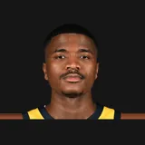

Mario Hezonja
Age
31
born Feb. 25, 1995
NBA seasons
6
2015-16 to 2026-27
Games
342
regular season
Per game
7.0
7.0 points · 3.2 rebounds
Life
- Born
- Feb. 25, 1995, in Dubrovnik, Croatia
- Age
- 31 (as of Nov. 13, 2026)
- Height
- 6'8" (height and lifespan)
Teams
regular-season games| Orlando Magic | 2015-16 to 2017-18 | 3 | 219 |
| New York Knicks | 2018-19 | 1 | 58 |
| Portland Trail Blazers | 2019-20 | 1 | 53 |
| Cleveland Cavaliers | 2026-27 | 1 | 12 |
Born the same year (1995)
Also born on February 25
